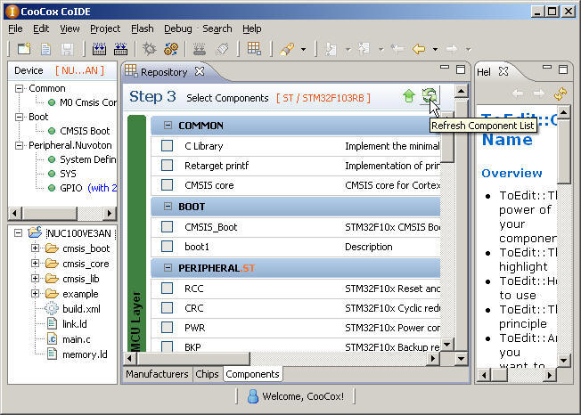

Users can refresh the component page to download and update the latest components:

1. Click the "Refresh Component List" button at the right-high corner of the repository view.
2. Then CoIDE will update the component list, you can click "Run in Background" to wait for update or "Cancle" to stop update or "Details" to view the update progress.
3. When the update completed, you can find the update link behind the component which have been modified on the CooCox’s server, and the download link behind the new components.
4. You can click these links to update the old components or download the new components.